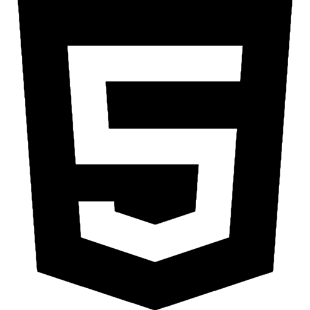
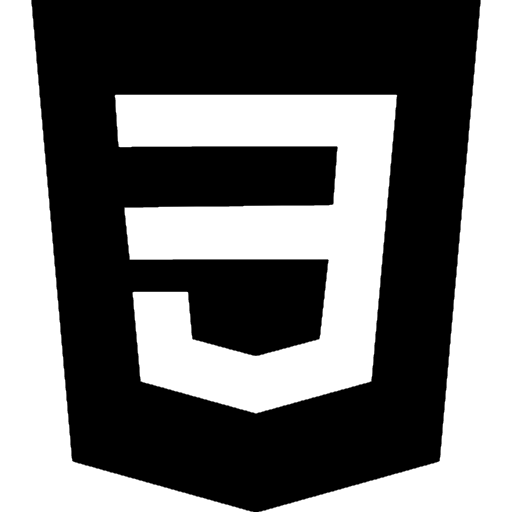

Czego się nauczysz na naszym kierunku?
Programowanie stron WWW w:
-

HTML
-

CSS
-

JavaScript
-

PHP
Tworzenie i zarzdzanie bazami danych
-

MySQL
Programowanie aplikacji mobilnych lub oprogramowania w:
-

C++
-

Python
-

Java
-

Django
-

Angular
Jak i Projektowa, Testowa Oprogramowanie/Aplikacje
Jzyki na tym kierunku

Angielski - Odgrywa kluczową rolę w programowaniu. Większość języków programowania i opisowych swoją składnię opierają na języku angielskim, znajomość tego języka ułatwia naukę programowania, uzyskiwanie wiedzy z anglojęzycznych źródeł, zwiększa prawdopodobieństwo zatrudnienia się u potencjalnego pracodawcy
Sala 309

Dlaczego my?
Praca programisty to także możliwość pracy zdalnej. Coraz częściej polscy programiści, będący pożądanymi specjalistami w konkretnych dziedzinach, są zatrudniani w firmach zagranicznych, ale nie muszą przez to wyjeżdżać z kraju. Gwarantuje to wysokie zarobki, prestiż oraz doświadczenie w wielkich zagranicznych firmach bez wychodzenia z domu.

Programiści należą do zawodów, w których aktualizacja wiedzy jest nieodłącznym elementem ich pracy. Ciągły postęp technologii wymusza na programistach nieustanny samorozwój. To ważne, jeśli chcą być na bieżąco.
 Mała podaż pracowników na rynku pracy powoduje wysokie zarobki wśród programistów. Osoby wchodzące na rynek pracy mogą liczyć średnio na 5500 zł brutto miesięcznie. Programiści ze średnim doświadczeniem mogą liczyć na ok. 10500 zł miesięcznie, natomiast najwyższe zarobki w kraju kształtują się na poziomie 16000 zł brutto.
Mała podaż pracowników na rynku pracy powoduje wysokie zarobki wśród programistów. Osoby wchodzące na rynek pracy mogą liczyć średnio na 5500 zł brutto miesięcznie. Programiści ze średnim doświadczeniem mogą liczyć na ok. 10500 zł miesięcznie, natomiast najwyższe zarobki w kraju kształtują się na poziomie 16000 zł brutto.
 Dzięki praktykom będziesz miał/a możliwość stosowania w praktyce wiedzy teoretycznej, którą zdobędziesz podczas nauki. Technikum daje Ci szansę na zdobycie doświadczenia i umiejętności, które będą nieocenione w przyszłej pracy zawodowej. Nie wahaj się, to właśnie tam będziesz mógł/a rozwinąć swoje pasje i zdobyć praktyczne umiejętności potrzebne do osiągnięcia sukcesu w wybranej dziedzinie.
Dzięki praktykom będziesz miał/a możliwość stosowania w praktyce wiedzy teoretycznej, którą zdobędziesz podczas nauki. Technikum daje Ci szansę na zdobycie doświadczenia i umiejętności, które będą nieocenione w przyszłej pracy zawodowej. Nie wahaj się, to właśnie tam będziesz mógł/a rozwinąć swoje pasje i zdobyć praktyczne umiejętności potrzebne do osiągnięcia sukcesu w wybranej dziedzinie.